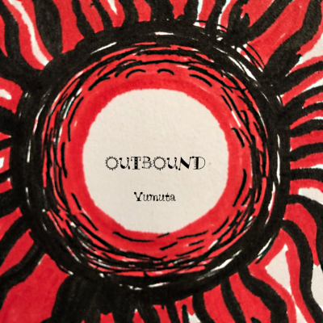

ニュース
2019.7.14 | Yumuta 1st ALBUM「OUTBOUND」を無料配布開始。
2019.7.1 | 楽曲「またおきた」が、ニコニコ動画のトップページで紹介されました。
2019.6.8 | 楽曲「在りし日の夢」が、リズムゲーム「Caelyta」で遊べるようになります。8月頃を予定。
◆活動情報は適宜 Twitterや Pixiv FANBOX にて発信しています。
Yumutaの作品たち
音楽作品
Youtube / ニコニコ動画 / SoundCloud にて視聴できます。
執筆
作曲ノウハウや経験談など。
その他
- ボカロ曲発掘サービス「VocaMiner」
販売・頒布など

2019.7.14~ | Yumuta 1st ALBUM「OUTBOUND」
トレンドに流されず独自の音楽表現を追求してきたアーティスト・Yumutaがお届けする初めての音楽作品集。 2018年4月からコンスタントに発表してきたボカロオリジナル曲10曲に加え、新規書下ろし2曲を収録。 Booth.pmより無料ダウンロード可能です。

Yumuta プロフィール
活動テーマ「音で遊ぶ」
独自の視点と遊び心をもち、唯一無二の音楽を生み出している。
連絡先
ご依頼などございましたら、ますはお気軽にご相談ください。
Twitter: @yumuta_official
Mail: yumuta.liamg＠gmail.com
略歴
2007年よりパソコンで音楽制作を始める。制作した曲の数は200超(2019年6月現在)。 2012年よりバンド演奏、ミュージカル作曲、合唱などさまざまな音楽を経験し、エッセンスを音楽制作に取り入れ続けてきた。 2018年にボカロP「Yumuta」としての活動を開始。 新しい試みを積極的に取り入れ、今までありそうでなかった新しい音楽体験を生み出している。
© Yumuta 2019